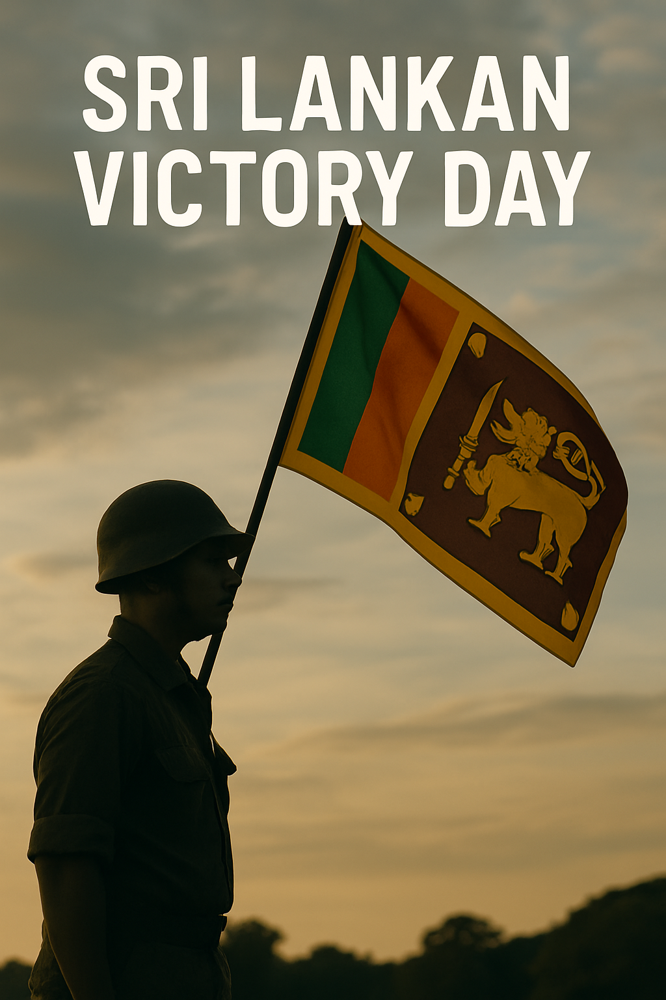

Image credit: [Everything Lanka]
Image credit: [Everything Lanka]
Victory Day is not just a commemoration of the end of a conflict — it is a powerful tribute to the resilience and unity of our people. Sri Lanka is a land enriched by the vibrant diversity of its ethnicities, cultures, and beliefs. On this day, we honor the brave men and women of all backgrounds who stood together to defend our nation's sovereignty and peace. It reminds us that beyond our differences lies a shared identity as Sri Lankans, bound by compassion, courage, and hope. As we pay tribute to the veterans who made the ultimate sacrifice, we also reaffirm our commitment to building a future of unity, harmony, and understanding for generations to come.
Victory Day in Sri Lanka, observed on May 18th each year, marks the official end of the decades-long civil conflict in the country. It is a day to remember those who sacrificed their lives and to honor the armed forces for bringing peace and unity to the nation.
Victory Day is a powerful reminder of the price of peace and the importance of unity in shaping the destiny of our beautiful island nation.